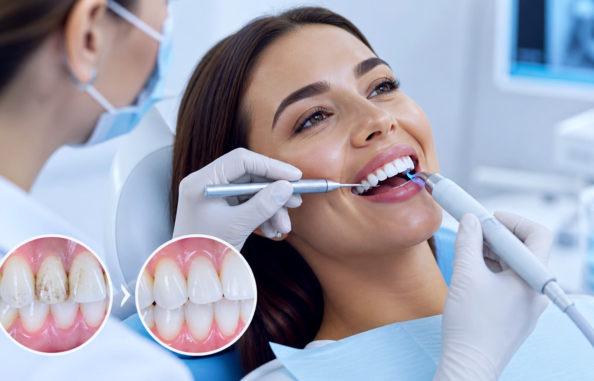
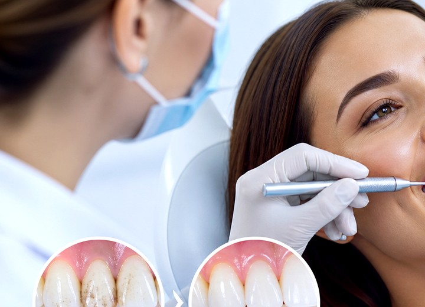
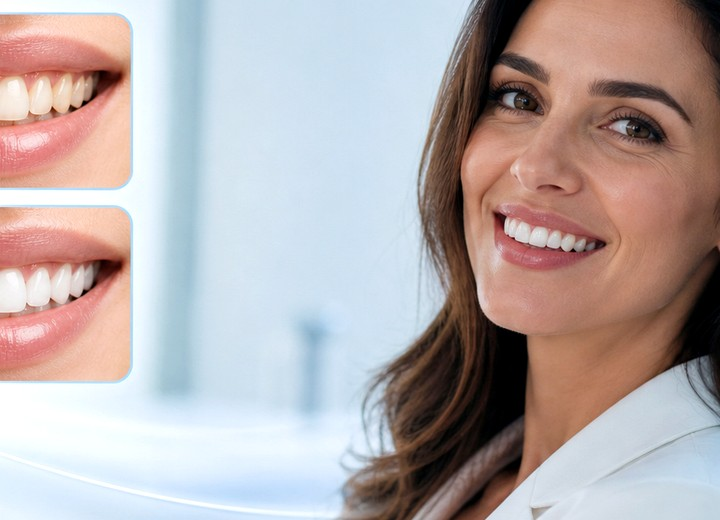

Мягкий налёт
Удаляем пигментацию от кофе, чая и курения.
Чистка раз в полгода — лучшая инвестиция в зубы. Делается за один визит, не больно, прямо после процедуры можно есть. AirFlow + ультразвук + полировка + фторирование.



Гигиена в BORC — это не просто чистка, а заметное улучшение цвета, гладкости и свежести улыбки.
Удаляем пигментацию от кофе, чая и курения.
Снимаем твёрдые отложения у десны.

Снижаем риск кариеса и воспаления дёсен.
Не «почистил и до свидания» — комплексная процедура из 5 этапов.
Стоматолог-гигиенист оценивает состояние дёсен, налёта и эмали.
Чистка водовоздушной струёй с порошком Prophy Pearls — снимает пигментацию (чай, кофе, никотин).
Снятие зубного камня — наддеснёвого и поддеснёвого. Без боли, без повреждения эмали.
Полировочные пасты разной зернистости, щёточки. Эмаль становится гладкой и не пачкается.
Фтор-лак R.O.C.S. укрепляет эмаль, снижает чувствительность. Эффект 6 месяцев.
Подбор щётки, пасты, ирригатора лично для вас. Индивидуально, не из брошюры.
Зубной налёт — главная причина кариеса. Снимая его раз в полгода, вы экономите на лечении.
Зубной камень провоцирует пародонтит. Гигиена — лучший способ сохранить дёсны здоровыми.
Налёт = бактерии = неприятный запах. После гигиены — свежесть на недели.
Чай, кофе, вино, никотин — всё это снимается за 40 минут. Зубы становятся на 1–2 тона светлее.
Из Павлова до Ворсмы — 5 км по Павловскому шоссе, прямо без поворотов. На автомобиле 10 минут, на автобусе №108 — 20 минут до остановки «Дом культуры».
Принимаем пациентов из районов: мкр. Северный, ул. Чапаева, ул. Кирова, ул. Куйбышева, мкр. Калинина.
Ориентиры: Павловский автобусный завод, Павловский историко-художественный музей, ТЦ Павловский.
После профгигиены зубы становятся визуально чище, а поверхность — более гладкой и светлой.
40 минут в кресле раз в полгода — вместо 30 000 ₽ на лечение каждые 2 года. Математика однозначная.